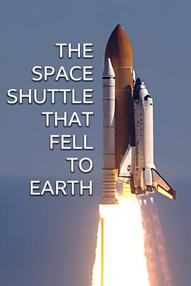

The Space Shuttle That Fell to Earth
又名：哥倫比亞太空梭墜毀事件(台)
太空任务失败后花了8个月调查原因，最后发现是经典的无奈 - 在那个时间、环境下必然会产生这样的失败。叙事做的挺好的，但是没有采访到顶层领导 Linda 其实有点blame她的感觉。情绪渲染得很好，但是也难逃官话套话场面话，因此减一星。
作品信息
| 导演 | Arron Fellows / Lizzie Kempton / Danielle Spears / Nancy Strang / Christian Collerton / Oli Roy |
| 主演 | Miles O’Brien |
| 类型 | 纪录片 / 灾难 |
| 制片国家/地区 | 美国 |
| 语言 | 英语 |
| 首播 | 2024-02-12(美国) |
| 集数 | 3 |
| 单集片长 | 58分钟 |
| IMDb | tt31251016 |
说过什么
2024-03-26 15:20:51
广播 · 看过 · ★★★★☆
太空任务失败后花了8个月调查原因，最后发现是经典的无奈 - 在那个时间、环境下必然会产生这样的失败。叙事做的挺好的，但是没有采访到顶层领导 Linda 其实有点blame她的感觉。情绪渲染得很好，但是也难逃官话套话场面话，因此减一星。
2024-02-24 14:10:40
广播 · 想看
最后一次看到是 2026-08-01T11:04:26+10:00 · 豆瓣原页